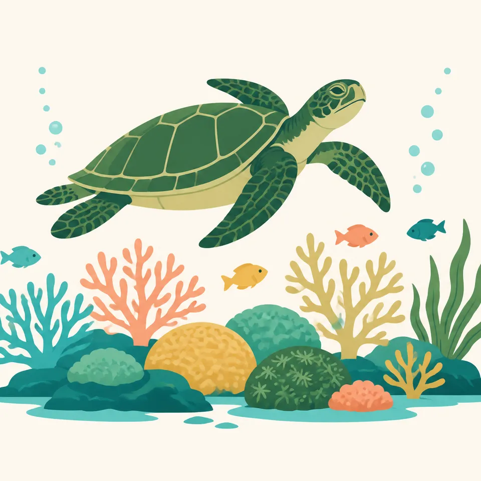
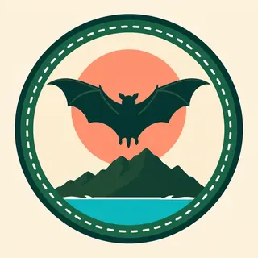

01
Tutuila, Ofu, and Ta‘ū
The park is not one shoreline. The history page places it on Tutuila, Ofu, and Ta‘ū. Rainforest runs from the shorelines to the peaks. The nature page names the same three volcanic islands and the reefs that fringe them.
TrailMark Archive Edition
American Samoa | South Pacific
The only U.S. national park with a paleotropical rainforest and an Indo-Pacific coral reef.
Archive No. TM-NPSA-028
National Park since 1993
Collection Tutuila, Ofu, and Ta‘ū
Park Overview
The National Park of American Samoa was established in 1993, spread across Tutuila, Ofu, and Ta‘ū to cover more than 8,000 acres of rainforest and coral reef. Steep, forested mountains and reef-lined coast fill the rest of its boundary.
The history page is plain about the tenure. Unlike most national parks, the land is leased from local villages. It is owned and managed communally under village chiefs, the matai. The park works with those communities so that preservation sits beside fishing, gathering, and farming.
Two ecosystems on that same page are unique inside the U.S. national park system: the only paleotropical rainforest, with species whose lineage is Southeast Asian, and the only Indo-Pacific coral reef. The nature page adds that the park protects nearly 4,000 acres of ocean around the three islands.
Emotional Thesis
The painting puts a fringing reef in the foreground and a green ridge behind a curve of sand. That is the park's own stack: shore, forest, and peak, on islands that are the tops of underwater volcanoes.
What the painting cannot show is the lease. A visitor is on land the federal government does not own. Fa‘asamoa, the Samoan way, is not a backdrop. It is how the park exists.
Landscape Highlights
01
The park is not one shoreline. The history page places it on Tutuila, Ofu, and Ta‘ū. Rainforest runs from the shorelines to the peaks. The nature page names the same three volcanic islands and the reefs that fringe them.
02
The history page singles out Ofu Lagoon for coral that has shown resistance to rising ocean temperatures, and treats that lagoon as a place scientists watch for what warming water does to reefs.
03
The history page calls the summit of Mt. Lata on Ta‘ū the highest point in American Samoa. It does not print an elevation. This essay does not add one. The hike is the page's example of how remote the park feels.
Wildlife
The nature page names green and hawksbill sea turtles among endangered species on reefs that hold more than 230 coral species and over 900 fish species.

01
The extra drawing is one sea turtle over coral. It is not a count, and it does not choose between green and hawksbill.
02
Humpback whales use these waters during the austral winter. That is a season, not a promise that a visit will include one.
03
The history page's reef totals and the nature page's reef totals match: more than 230 corals and over 900 fishes. The forest totals above are the history page's.
Geology
The history page says the islands are the peaks of ancient underwater volcanoes. The landscapes record that formation over millions of years. No eruption year is added here.
01
Rainforest covers those peaks from summit to coast. The geology and the forest are the same slope.
02
The reef is the living edge of that volcanic coast. Ofu Lagoon is the page's example of a reef being watched as ocean temperatures rise.
03
A summit elevation for Mt. Lata was not on the history page. Leaving it out is the accurate choice.
The nature page says migrating humpback whales frequent these waters in the austral winter. That is the seasonal wildlife fact this essay will use. Storm calendars belong on the NPS site.
The nature page lists coral bleaching, severe storms, and the crown-of-thorns starfish among pressures on the reef, alongside overfishing and invasive species. A clear lagoon in the painting is not a health report.
The rainforest is described as green from the peaks to the coast in every section of the nature page. This essay does not invent a dry-season leaf drop.
Fishing, gathering, and farming continue under the lease. A visit follows village and park rules that can change. Read them on NPS before you go.
Photography
The header is a curve of sand between shallow coral and a forested wall. Cropping to only the beach loses the park.
01
Paleotropical forest and Indo-Pacific reef are the two claims that make this park unlike the other 62. A picture of one without the other is half the sentence.
02
Trails and shores are on village land. Ask before you treat a beach or a family compound as a backdrop.
03
Mt. Lata can be a subject. Do not letter an elevation onto it that the park page did not give.
Field Notes
The forest is paleotropical, the reef is Indo-Pacific, and the ground under both is leased.
TrailMark Field Notes

Badge Story
The mark needs the fringing reef and the volcanic green wall. A lone palm tree could be any tropical coast.
Shallow coral, a sand curve, and a ridge.
A fruit bat or a turtle can stand in for the two realms. Neither is a census.
Do not borrow the Florida Keys lighthouse. That composition belongs to Biscayne.
Archive No.028
LocationTutuila, Ofu, Ta‘ū
ReleaseReef Mark
Stewardship / Safety
The nature page names climate change, overfishing, invasive species, bleaching, storms, and crown-of-thorns starfish. The history page names the lease. Both are the visit.
Land is communally held under the matai. Follow the village agreements the park posts. They are not optional etiquette.
Green and hawksbill turtles are named as endangered. Give them distance in the water and on the sand.
Ofu Lagoon is a research site because some coral there has resisted warmer water. It is not a license to stand on the coral.
Fees, permits, and which shores are open change. The NPS park page is the source, not this essay.
Current conditions, fees, and alerts are on the National Park Service site.
Continue the Archive
Biscayne is the Florida bay and reef beside a city. Channel Islands is kelp water off California. American Samoa is the Indo-Pacific park, on leased land.